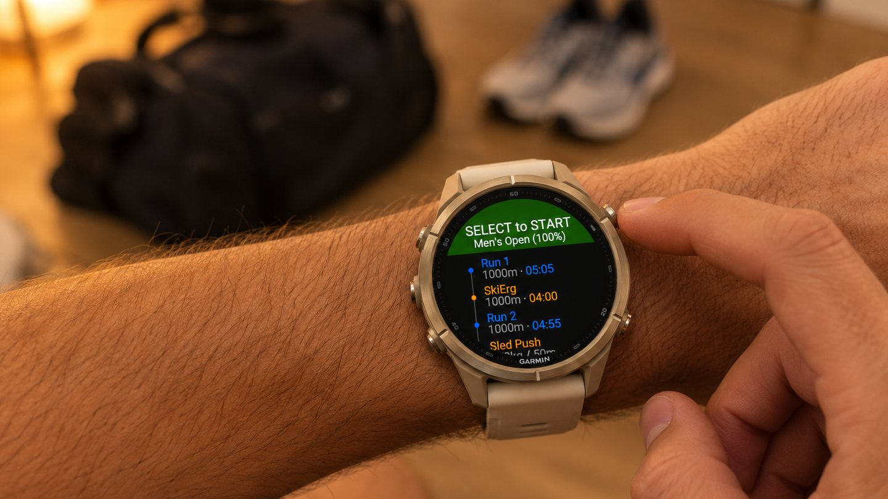
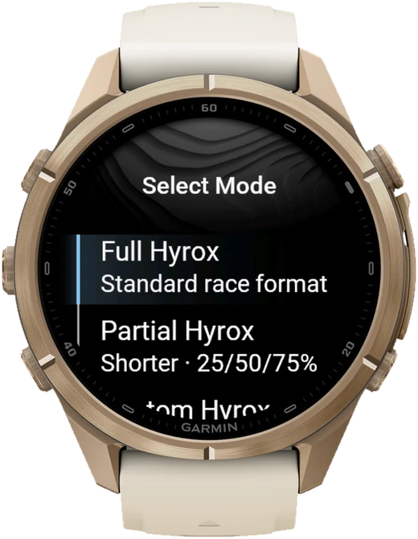
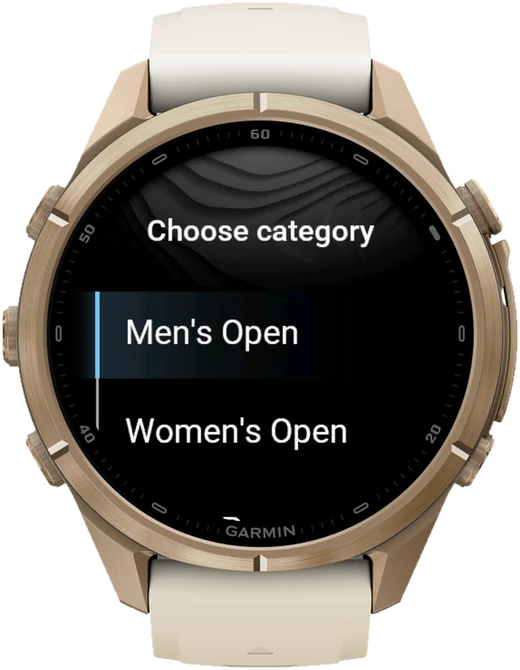
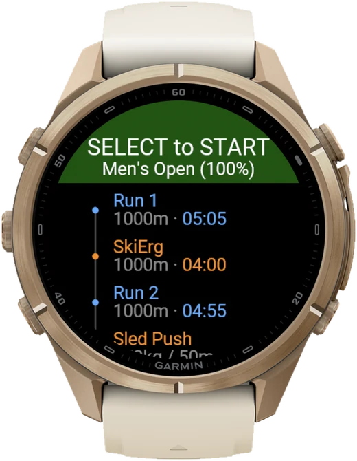
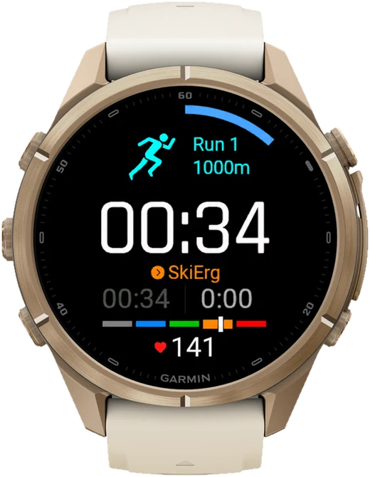
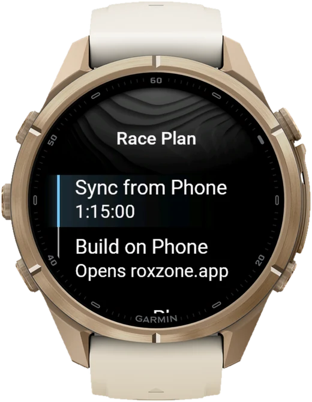
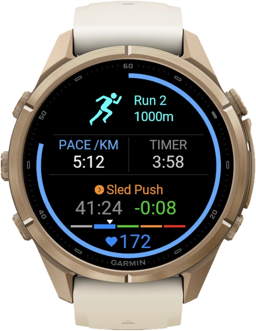

How to set up your Garmin for your first HYROX

Most people sort out their watch the night before their first HYROX race. They scroll the activity list for HYROX, pass pickleball and paddleboarding on the way, and settle for Run.
It records, but not much you can use. Indoors the distance is a guess, so laps end wherever the watch thinks a kilometre has passed, which is rarely where a station starts.
Afterwards you have a total time and a heart rate line, and no way to tell whether the wall balls took five minutes or nine.
There are three ways to set up a Garmin to track a HYROX, or any hybrid workout, properly: two free, and one a dedicated app.
In short
- A copied run or cardio profile. Free, any Garmin, a numbered lap for each press.
- A custom multisport activity. Free on mid-range watches and up. Each leg is saved on its own.
- A dedicated HYROX app, ROXZONE. One-time purchase. Choose your category and start, with named laps, a timed Roxzone, detailed splits and a Race Plan to pace you.
What a HYROX asks of a watch
A HYROX is eight 1 km runs with a station after each one.
Between the track and every station you pass through the Roxzone, and that time counts toward your finish. Most races are held indoors, where GPS is unreliable.
Whichever setup you choose, it is worth judging it on four things:
- Splits you can read. One for each run and each station, so you can see afterwards where the time went.
- The Roxzone on its own. Your official result lists it separately, and it is often the easiest place to gain time.
- Nothing that leans on GPS. Indoors it gets the distance wrong.
- Something to pace against. A way to know, in the middle of the race, whether you are on your goal.
Three ways to track HYROX on a Garmin, side by side
Here they are against those four points, plus the practical details.
| Copied profile | Multisport | ROXZONE | |
|---|---|---|---|
| One activity | Yes | No | Yes |
| Laps named | No | Partly | Yes |
| Roxzone named | No | No | Yes |
| Next HYROX station shown | No | No | Yes |
| Pace plan | No | No | Yes |
| To set up | A few settings | Add two activities | Pick a category |
| Watches | Any Garmin | Mid-range and up | Most models |
| Price | No cost | No cost | One-time |
Option 1: A copied run or cardio profile
This is the setup most guides describe, and it costs nothing. On the watch, copy the Cardio or Run activity, name it HYROX, and change three settings:
- GPS off. Indoors it only adds a wrong distance.
- Auto Lap off. A lap should end when you press, not every kilometre.
- Auto Pause off. Otherwise a slow sled push can be read as standing still and cut from your time.
In the race you press the lap button at every change from run to station and back. That is about 16 button presses, or about 32 if you also want each Roxzone as its own lap.
Best for: Anyone who wants the simplest setup, with nothing to install, and needs only a finish time and a heart rate trace.
The catch: The laps are only numbered. Lap 4 is just "Lap 4", and you have to remember afterwards that it was the sled push. Miss one button press and every later lap shifts by one.
Option 2: A custom multisport activity
Many Garmins let you build a multisport activity of your own. Mid-range and higher models have it; entry-level ones do not.
- Two parts. One for the runs and one for the stations. A copy of Cardio works for the stations.
- Repeat on. The pair loops for all eight rounds.
- Transitions off. The watch goes straight from one to the next.
The watch now swaps between a run screen and a station screen at every press of the lap button, which is a real step up from one screen for everything.
Best for: Athletes who want different data on runs and stations and are happy to piece the race together afterwards.
The catch: It takes some building on the watch, and Garmin saves every leg as its own activity. One race comes back as sixteen separate sessions, grouped under one multisport entry in Garmin Connect, and Strava gets each leg on its own. You end up with the pieces of a result, not one result to share.
Option 3: A dedicated HYROX app
The third way is a Connect IQ app built around the race. ROXZONE is one of the best HYROX apps out there, used by more than 5,000 athletes in over 60 countries.
There is nothing to build. You choose your category and it loads all eight runs and stations in order, with the right weights and distances.
- One activity with named laps. The race saves to Garmin Connect as a single activity, and the laps read Run 1, SkiErg, Run 2, Sled Push and so on.
- Everything at a glance. Pace, lap time, the next station, heart rate and how you are tracking against your plan, on one screen. One press of the lap button moves you on.
- The Roxzone as its own split. Switch it on and each transition is timed apart from your runs and stations, for an extra press or two per station.
- Run pace without GPS. The watch estimates your pace indoors and gets closer with every run you record.
- A plan to pace the race. Race Plan turns your goal time into a target for every run and station. Covered below.
- Detailed splits that show where you lose time. Every run, station and Roxzone is timed by name, so you can see exactly where a race slipped. Results save to your account at roxzone.app with your training weeks, run pace and best times, and a card to share.
Best for: Anyone who wants to choose a category and go, with detailed splits to learn from and a plan to pace the race.
The catch: It is a one-time purchase, where the other two are free.
Setting it up
-

01Install
Search ROXZONE in the Connect IQ Store app and tap Install.
-

02Pick your division
Unlock once, then choose Full Hyrox and your division.
-

03Review the race
Every run and station is listed in order. Press SELECT to warm up.
-

04Race
LAP starts the clock, then one press at every arch.
ROXZONE runs on Garmin watches with Connect IQ 3.2 or later, which covers most Forerunner, fenix, epix, Venu and vívoactive models. The Connect IQ listing has the full list.
Race Plan
Set a pace you can hold
The mistake that costs first-timers most is running the first kilometre too fast. It feels easy, so they run it like a 5K, and the bill arrives at the sleds.
The free setups give you nothing to pace against, because a Garmin profile has no idea how long your sled push should take. Race Plan is the part of ROXZONE that does.
You enter a goal time at roxzone.app and it splits that time across the eight runs, the eight stations and the Roxzone. Change any split you know better, save, and the plan goes to your watch.



In the race the watch shows how far ahead or behind you are, repeats it at every press of the lap button, and fills a ring toward the target for the run or station you are in.
For most first-timers, most of what it says is to run slower.
Choosing the goal is its own subject. See What pace to aim for in your first HYROX.
Build your race planBefore race day, whichever setup you choose
- Use it in training first. Do at least one session with the exact setup you will race with. A half simulation is ideal. ROXZONE has one built in, and with the free setups you simply stop after four stations.
- Know where you will press. In a race the place is under each arch, because that is where your chip is read. How to use your Garmin on HYROX race day goes through every press.
- Lock the touchscreen. Sled handles and wall balls are good at tapping screens. Garmin has a touch setting for each activity, and ROXZONE has its own in the workout settings.
- Charge the watch. Do it the night before.
Any of the three will get you round a first HYROX. What differs is what you have afterwards: a finish time and a heart rate trace, a set of separate legs, or a named, shareable result and a plan to build on.
Common questions
Does Garmin have a HYROX activity?
No. As of November 2026, Garmin watches have no built-in HYROX activity or HYROX mode. You track a race with a copied Run or Cardio profile, a custom multisport activity, or a Connect IQ app such as ROXZONE.
Which Garmin activity should I use for HYROX?
Without an app, copy the Cardio or Run activity, name it HYROX, and turn GPS, Auto Lap and Auto Pause off. Then press the lap button at every change from run to station. On mid-range watches and up, a multisport activity with a run leg and a station leg on repeat gives you a separate screen for each.
Should GPS be on during a HYROX race?
No. Most races are held indoors, where GPS gets the distance wrong, so turn it off in a copied profile. ROXZONE estimates your run pace indoors without GPS.
How many times do I press LAP in a HYROX?
About 16 with a copied profile, one at every change from run to station and back, or about 32 if you also want each Roxzone as its own lap. With ROXZONE it is two to four presses a station, depending on how you time the Roxzone.
Which Garmin watches can run ROXZONE?
Garmin watches with Connect IQ 3.2 or later, which covers most Forerunner, fenix, epix, Venu and vívoactive models. The Connect IQ listing has the full list.